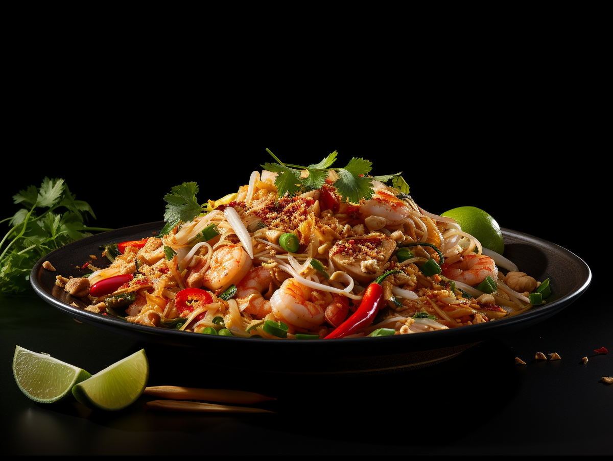

Пад Тай с креветками

🌟 Совет шефа: Пад Тай готовится очень быстро, поэтому подготовьте все ингредиенты заранее — процесс займет не больше 5-7 минут.
Ингредиенты:
Для соуса:
- Рыбный соус — 3 ст.л.
- Тамариндовая паста — 2 ст.л.
- Пальмовый сахар (или обычный) — 2 ст.л.
- Сок лайма — 1 ст.л.
- Вода — 2 ст.л.
Для основного блюда:
- Рисовая лапша (широкая) — 200 г
- Креветки очищенные — 200 г
- Тофу твердый — 100 г
- Яйца — 2 шт
- Ростки сои — 100 г
- Зеленый лук — пучок
- Чеснок — 3 зубчика
- Арахис (несоленый) — 50 г
- Растительное масло — 3 ст.л.
Для подачи:
- Лайм — дольками
- Кинза — пучок
- Красный перец хлопьями
Приготовление:
- Подготовка лапши: Залейте рисовую лапшу теплой водой на 20-30 минут (не варите!), она должна стать мягкой, но упругой. Откиньте на дуршлаг.
- Соус: Смешайте рыбный соус, тамариндовую пасту, сахар, сок лайма и воду. Размешайте до растворения сахара.
- Подготовка: Тофу нарежьте кубиками, креветки очистите, чеснок измельчите, арахис порубите ножом (не в пыль, а кусочками).
- Обжарка тофу и креветок: В воке или глубокой сковороде разогрейте 1 ст.л. масла, обжарьте тофу до золотистости (2 минуты), добавьте креветки и жарьте еще 2 минуты. Переложите в тарелку.
- Яичница: В ту же сковороду добавьте еще 1 ст.л. масла, вбейте яйца и быстро перемешайте, чтобы получилась яичная "рваная" масса. Жарьте 30 секунд.
- Лапша: Добавьте в сковороду размоченную лапшу и чеснок. Перемешивайте 1-2 минуты.
- Соус: Влейте приготовленный соус и активно перемешивайте, пока лапша полностью не покроется соусом.
- Возвращаем креветки: Верните в сковороду креветки с тофу, добавьте половину ростков сои и половину зеленого лука. Перемешайте и прогрейте минуту.
- Подача: Выложите на тарелку, сверху посыпьте оставшимися ростками сои, зеленым луком, рубленым арахисом и кинзой. Рядом положите дольку лайма.
⚠️ Важно: Не передержите лапшу! Она должна оставаться слегка упругой. Если соус впитался слишком быстро, добавьте пару ложек воды.
Пищевая ценность (на порцию):
Калории: ~520 ккал | Белки: 28 г | Жиры: 18 г | Углеводы: 65 г